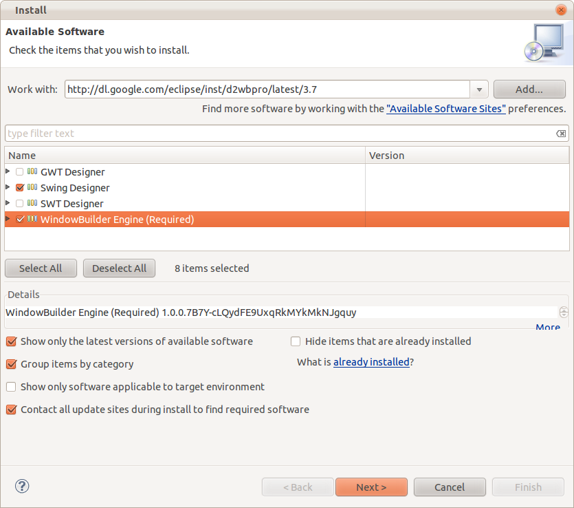
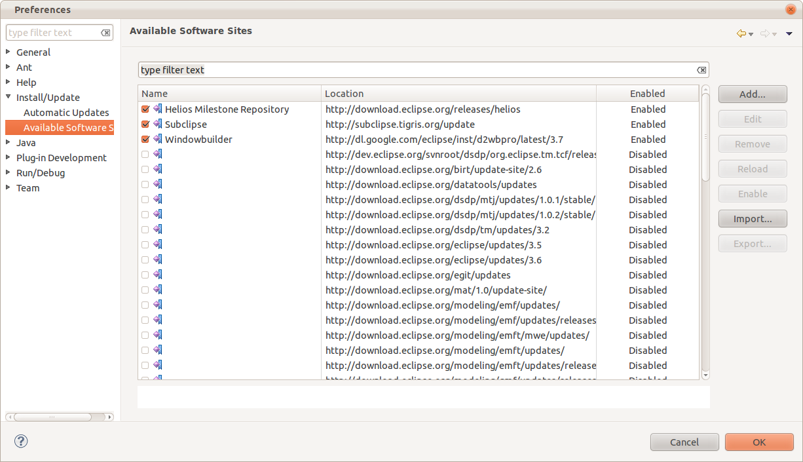

Install this Eclipse plugin by using the Install Software tool within Eclipse.
The link required in the "Add Site" dialog can be found at
https://developers.google.com/java-dev-tools/download-wbpro
For example, if you are using Eclipse 3.7, the link is
http://dl.google.com/eclipse/inst/d2wbpro/latest/3.7

If during the installation you get an error saying that a dependency cannot be satisfied, perhaps the Eclipse update site is not enabled (see message: "Eclipse needs to hit the Galileo/Helios/etc. update site during installation.") Make sure that the http://download.eclipse.org/releases/galileo (or http://download.eclipse.org/releases/helios, depending on your version of Eclipse) site is enabled.
